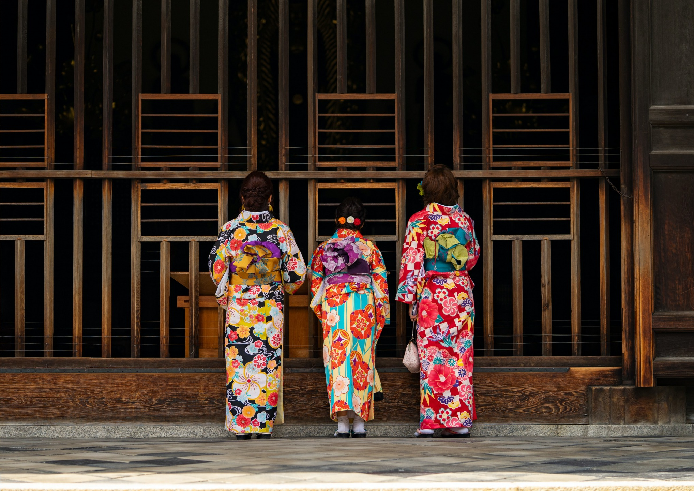
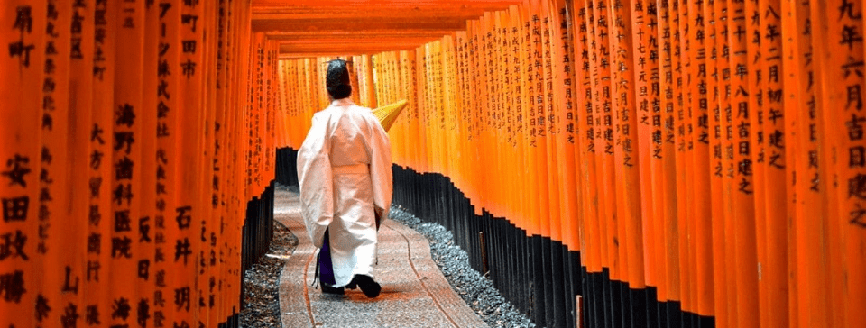
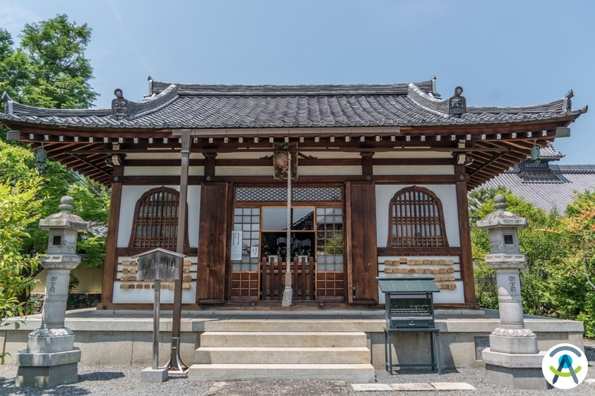
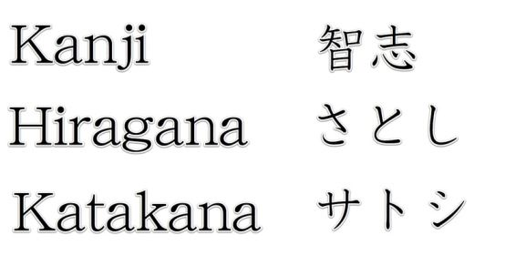
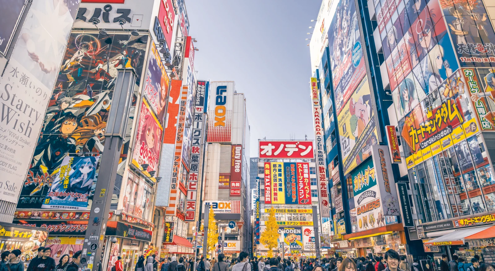

La culture japonaise est vaste et complexe, riche d'une histoire millénaire et d'une modernité saisissante. Voici une liste exhaustive des éléments principaux à connaître sur la culture japonaise, incluant les arts, les traditions, la cuisine, les cérémonies, et plus encore.
Arts et Divertissement
- Littérature : Du poème court "haiku" aux œuvres monumentales de Murasaki Shikibu et de modernistes comme Haruki Murakami.
- Musique et Danse : Des formes traditionnelles comme le gagaku (musique de cour) et le nô (danse-théâtre), jusqu'aux J-Pop et Visual Kei.
- Cinéma : Les films de Akira Kurosawa, les studios Ghibli, et la montée en popularité du cinéma d'animation (anime).
- Arts Visuels : L'ukiyo-e (estampes japonaises), la poterie, la laque, et les arts modernes.
Traditions et Pratiques Culturelles
- Théâtre : Noh, Kabuki et Bunraku (théâtre de marionnettes).
- Martial : Arts martiaux traditionnels tels que le judo, le kendo, l'aikido, et le karate.
- Vêtements Traditionnels : Kimono, yukata, hakama, et les techniques de tissage et de teinture comme le shibori.
- Festivals (Matsuri) : Hanami (festival des cerisiers en fleurs), Gion Matsuri à Kyoto, et Awa Odori.
- Rites et Cérémonies : Cérémonie du thé (chanoyu), mariages shinto, et funérailles bouddhistes.

Cuisine Japonaise
- Plats Typiques : Sushi, sashimi, ramen, tempura, et tonkatsu.
- Boissons : Sake (riz fermenté), shochu (distillat), et thé vert japonais.
- Principes de Cuisine : Umami comme saveur fondamentale, importance de la saisonnalité des ingrédients, et présentation esthétique des plats.

Religions et Philosophies
- Shintoïsme : La religion indigène du Japon, centrée sur le culte des kami (esprits de la nature).
- Bouddhisme : Introduit au Japon au 6ème siècle, avec plusieurs écoles influentes comme le Zen et le Pure Land.
- Confucianisme et Taoïsme : Influence sur les normes sociales et la philosophie.

Jardins et Architecture
- Jardins Japonais : Conçus pour la méditation et la réflexion, caractérisés par des éléments comme des rochers, de l'eau et des miniaturisations de paysages naturels.
- Architecture : De l'architecture traditionnelle des temples et des sanctuaires à l'architecture moderne de designers comme Kenzo Tange et Tadao Ando.

Langue et Écriture
- Langue : Japonais, avec des niveaux de politesse variés et un usage contextuel complexe.
- Systèmes d'Écriture : Kanji (caractères dérivés du chinois), Hiragana et Katakana.

Innovations et Influences Modernes
- Technologie : Avancées en robotique, électronique, et automobiles.
- Pop Culture : Manga et anime, jeux vidéo, et la mode de Harajuku.
